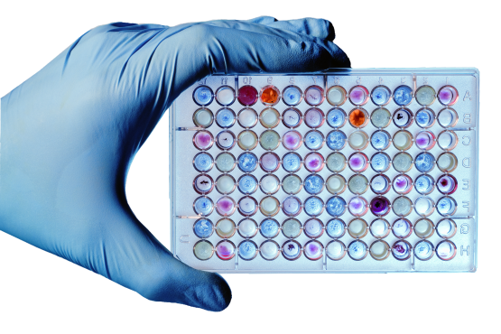

Phase involving sample collection and handling before analysis.
Evaluation of test performance through external assessment.
Technique to amplify and quantify specific DNA sequences.
Systematic process to ensure the quality of reagents and tests.
Measures to ensure test accuracy and reliability.
Solution that maintains optimal conditions for a chemical reaction.
Study of the rate and mechanism of chemical reactions.
Sample without target analyte used to test for reagent contamination.
Purity level of a reagent, indica ng suitability for analy cal use.
Procedures for using and managing
reagents.
Conditions and methods for keeping reagents stable and effective.
Substance with a known concentration used as a benchmark for comparison.
Adherence to regulations and standards for reagent use.
Method to amplify RNA sequences by converting them to DNA first.
Document providing information on the safety and handling of reagents.
Steps taken to prepare a sample for analysis.
Amount of sample required for analysis.
Duration a reagent remains effective before expiration.
Technique to enhance the detec on signal in a test.
Process of obtaining biological samples for testing.
Technique to measure the amount of light absorbed by a sample.
Ability of a reagent to maintain its performance over time.